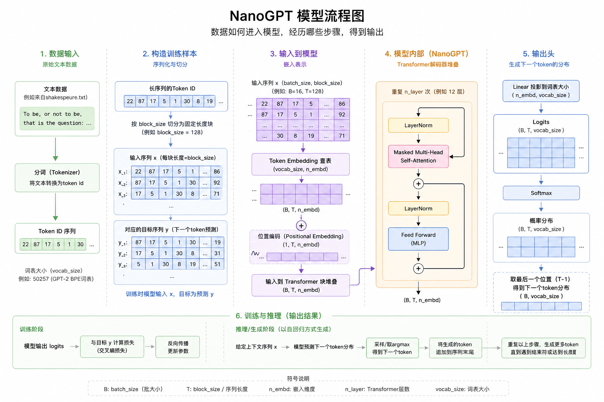

前言
本篇博客旨在讲解如何从零搭建一个nanoGPT模型到理解nanoGPT的原理，帮助初入大模型的学习者快速学习一个大模型是如何构建、训练和推理。以及给没有算力的同学提供一些免费的算力的方法进行训练自己的nanogpt模型。AI时代我们不仅仅要学会使用大模型，更需要我们适当地了解一个大模型的原理。
nanoGPT是 Andrej Karpathy（前 OpenAI、Tesla AI 负责人）开源的极简 GPT实现，目标是用最少的代码（单文件约 500 行）完整覆盖 GPT的核心架构，去除所有工程复杂性，只保留最纯粹的模型定义和训练逻辑。本文基于对 nanoGPT 源码的逐行学习，记录自己从零理解和实现一个完整 GPT 语言模型的过程。模型的内部结构如下

本文的实现参考:
代码部署与文件结构
步骤一 ：打开系统自带的终端(terminal),并进入要将代码部署的文件夹。以Mac为例，在终端输入以下代码： cd ~/Documents/AI_Projects。
步骤二 ：进入部署的文件夹打开，我们可以看到nanoGPT的目录结构如下:
1 2 3 4 5 6 7 8 9 10 11 12 13 14 15 16 nanoGPT/
各个文件作用如下：
文件
作用
服务对象
model.py定义 GPT 模型结构（Attention、MLP、Block）
模型前向传播
train.py训练循环、优化器、学习率调度
训练阶段
sample.py加载 checkpoint，生成文本
推理阶段
configurator.py从 config 文件或命令行加载超参数
所有阶段
config/*.py预定义的超参数配置
训练/评估
data/*/prepare.py将原始文本转为二进制训练数据
数据预处理
out/ckpt.pt训练保存的模型权重
推理/续训
其中model.py是该项目的核心，后续章节我们将逐模块拆解其中的实现细节和数学原理。
data/prepare.py——数据处理
data文件夹里有三个子文件夹包含着三类数据，我们这次仅以nanoGPT/data/shakespeare_char为例讲解我们是如何获取数据以及到如何处理数据使得模型可以对我们的数据进行学习。
1 2 3 4 5 6 7 8 9 shakespeare_char/
input.txt是原始文本——莎士比亚的戏剧作品。我们接下来将具体讲解prepare.py是如何处理文本以便于模型读取的。
1 2 3 4 5 6 7 8 9 10 11 'input.txt' )if not os.path.exists(input_file_path):'https://raw.githubusercontent.com/karpathy/char-rnn/master/data/tinyshakespeare/input.txt' with open (input_file_path, 'w' ) as f:with open (input_file_path, 'r' ) as f:print (f"数据集字符总数: {len (data):,} " )
经过上面代码:这样我们就将读取了数据集里面的数据转移到了data里面存储。
1 2 3 4 5 sorted (list (set (data)))len (chars)print ("所有唯一字符:" , '' .join(chars))print (f"词汇表大小: {vocab_size:,} " )
经过上面代码:这里我们就可以知道整个数据集字符总数有1,115,394个。所有唯一字符包括空格、标点符号（如 !$&',-.:;?）、大写字母 A-Z、小写字母 a-z，共 65 个字符。词汇表大小为 65。
1 2 3 4 5 6 7 8 9 10 for i,ch in enumerate (chars) }for i,ch in enumerate (chars) }def encode (s ):"""编码器：将字符串转换为整数列表""" return [stoi[c] for c in s]def decode (l ):"""解码器：将整数列表转换回字符串""" return '' .join([itos[i] for i in l])
经过上面代码:我们就创建了不同字符对不同整数的映射的字典，方便后面解码和编码，将各种字符编码成0-64。
1 2 3 4 5 6 7 8 9 10 11 12 13 14 15 16 17 18 19 20 21 22 23 n = len (data)int (n*0.9 )] int (n*0.9 ):] print (f"训练集 token 数: {len (train_ids):,} " )print (f"验证集 token 数: {len (val_ids):,} " )'train.bin' ))'val.bin' ))'vocab_size' : vocab_size, 'itos' : itos, 'stoi' : stoi, with open (os.path.join(os.path.dirname(__file__), 'meta.pkl' ), 'wb' ) as f:
最后一段代码首先将数据按9:1划为训练集和验证集，然后利用上面的代码块的encode函数将文本编码为整数序列，
model.py——模型结构">model.py ——模型结构
经过了prepare.py的处理，我们已经把我们的数据转化为了可供模型快速读取的二进制的数据了。此时每个字符对应的整数编号（0-64）我们称之为token 。
GPTConfig: 模型配置类（超参数定义）
GPT: GPT 模型主类
CausalSelfAttention: 因果自注意力机制
MLP: 前馈神经网络
Block: Transformer 块（Attention + MLP）
LayerNorm: 层归一化
GPTConfig：
这个部分是设定模型的超参数的一个类，以便后面直接调用。
1 2 3 4 5 6 7 8 9 10 11 12 @dataclass class GPTConfig :""" GPT 模型配置：定义模型的超参数。 """ int = 1024 int = 65 int = 12 int = 12 int = 768 float = 0.0 bool = True
这是一个定义模型超参数的类，block_size就是把一个长文本都切成1024个字符的串，然后再把一串一串的字符放进模型内。其他参数：vocab_size 是词表大小（Shakespeare 是 65），n_layer 是 Transformer 层数，n_head 是注意力头数，n_embd 是每个 token 的向量维度，dropout 是随机丢弃比例，bias 是是否加偏置。实际训练时 vocab_size 会被数据集的真实词表大小覆盖，n_head 必须能整除 n_embd。具体的参数作用会在后面进行更详细地解析。
LayerNorm
正如前言的模型架构图所演示的，这是模型第一个经过的神经网络层——归一化层。其代码如下：
1 2 3 4 5 6 7 8 class LayerNorm (nn.Module):def __init__ (self, ndim, bias ):super ().__init__()self .weight = nn.Parameter(torch.ones(ndim)) self .bias = nn.Parameter(torch.zeros(ndim)) if bias else None def forward (self, input ):return F.layer_norm(input , self .weight.shape, self .weight, self .bias, 1e-5 )
ndim是 n_embd，即768，他是将一个token转化为768维的一维向量。传进来告诉LayerNorm “我要归一化的向量有多长”。
假设一个 token 的向量是 x = [ x 1 , x 2 , . . . , x 7 6 8 ] x = [x_1, x_2, ..., x_{768}] x = [ x 1 , x 2 , . . . , x 7 6 8 ]
1.算均值和方差：μ \mu μ σ 2 \sigma^2 σ 2 x ^ i \hat{x}_i x ^ i ϵ \epsilon ϵ
2.缩放和偏移：y i = γ i x ^ i + β i y_i = \gamma_i \hat{x}_i + \beta_i y i = γ i x ^ i + β i γ \gamma γ β \beta β
为什么需要LayerNorm？ 每一层的输出值可能越来越大或越来越小，LayerNorm 把它们拉回到均值 0、方差 1 的范围，让训练更稳定。
CausalSelfAttention
这一层是 nanoGPT 最重要的组成部分，来源于 2017 年 Google 团队的论文 “Attention Is All You Need” （Vaswani et al.）。这篇论文提出了 Transformer 架构。
自注意力机制的核心思想是：让序列中的每个 token 去"关注"其他 token，计算它们之间的关系强度，然后按关系强度加权求和，得到每个 token 的新表示。而"因果"（Causal）意味着每个 token 只能看到它前面的 token，不能看到后面的。
其数学表达式为：
A t t e n t i o n ( Q , K , V ) = s o f t m a x ( Q K T d k ) V \text{Attention}(Q, K, V) = \text{softmax}\left(\frac{QK^T}{\sqrt{d_k}}\right) V
A t t e n t i o n ( Q , K , V ) = s o f t m a x ( √ d k Q K T ) V
其中 Q、K、V 都是由输入 X X X
Q = X W Q , K = X W K , V = X W V Q = XW^Q, \quad K = XW^K, \quad V = XW^V
Q = X W Q , K = X W K , V = X W V
维度说明（以 GPT-2 small 为例，B B B T T T d m o d e l d_{model} d m o d e l h h h d k = d m o d e l / h = 6 4 d_k = d_{model}/h = 64 d k = d m o d e l / h = 6 4
X ∈ R B × T × d m o d e l X \in \mathbb{R}^{B \times T \times d_{model}} X ∈ R B × T × d m o d e l
W Q , W K ∈ R d m o d e l × d k W^Q, W^K \in \mathbb{R}^{d_{model} \times d_k} W Q , W K ∈ R d m o d e l × d k
W V ∈ R d m o d e l × d v W^V \in \mathbb{R}^{d_{model} \times d_v} W V ∈ R d m o d e l × d v
Q , K ∈ R B × h × T × d k Q, K \in \mathbb{R}^{B \times h \times T \times d_k} Q , K ∈ R B × h × T × d k
Q K T ∈ R B × h × T × T QK^T \in \mathbb{R}^{B \times h \times T \times T} Q K T ∈ R B × h × T × T
s o f t m a x ( Q K T / d k ) V ∈ R B × h × T × d k \text{softmax}(QK^T/\sqrt{d_k})V \in \mathbb{R}^{B \times h \times T \times d_k} s o f t m a x ( Q K T / √ d k ) V ∈ R B × h × T × d k
Q Q Q
K K K
V V V
Q K T QK^T Q K T
d k \sqrt{d_k} √ d k
softmax：把相似度变成概率（加起来为1）
乘 V V V
具体代码实现如下：
1 2 3 4 5 6 7 8 9 10 11 12 13 14 15 16 17 18 19 20 21 22 23 24 25 26 27 28 29 30 31 32 33 34 35 36 37 38 39 40 41 42 43 44 45 46 47 48 49 50 51 52 53 class CausalSelfAttention (nn.Module):def __init__ (self, config ):super ().__init__()assert config.n_embd % config.n_head == 0 self .c_attn = nn.Linear(config.n_embd, 3 * config.n_embd, bias=config.bias)self .c_proj = nn.Linear(config.n_embd, config.n_embd, bias=config.bias)self .attn_dropout = nn.Dropout(config.dropout)self .resid_dropout = nn.Dropout(config.dropout)self .n_head = config.n_headself .n_embd = config.n_embdself .dropout = config.dropoutself .flash = hasattr (torch.nn.functional, 'scaled_dot_product_attention' )if not self .flash:print ("WARNING: using slow attention. Flash Attention requires PyTorch >= 2.0" )self .register_buffer("bias" , torch.tril(torch.ones(config.block_size, config.block_size))1 , 1 , config.block_size, config.block_size))def forward (self, x ):""" 前向传播：计算输入 x 的注意力输出。 输入: (B, T, C) - 批次大小, 序列长度, embedding维度 输出: (B, T, C) - 同形状 """ self .c_attn(x).split(self .n_embd, dim=2 )self .n_head, C // self .n_head).transpose(1 , 2 ) self .n_head, C // self .n_head).transpose(1 , 2 ) self .n_head, C // self .n_head).transpose(1 , 2 ) if self .flash:None ,self .dropout if self .training else 0 ,True else :2 , -1 )) * (1.0 / math.sqrt(k.size(-1 ))) self .bias[:,:,:T,:T] == 0 , float ('-inf' )) 1 ) self .attn_dropout(att) 1 , 2 ).contiguous().view(B, T, C)self .resid_dropout(self .c_proj(y))return y
上述代码与前面模块的结构类似：首先在 __init__ 中定义前向传播所需要的参数和函数，然后再在 forward 中定义前向传播的过程。
__init__ 中的参数：
self.c_attnn_embd 维，输出 3*n_embd 维，一次性算出 Q、K、V 三个向量self.c_projn_embd 投影回 n_embd，融合不同头的信息self.attn_dropoutself.resid_dropout
前向传播 forward 的步骤：
通过 self.c_attn 算出 Q、K、V，拆分后 reshape 成多头形式 (B, n_head, T, head_dim)
计算注意力分数 Q K T / d k QK^T / \sqrt{d_k} Q K T / √ d k
因果掩码：通过下三角矩阵遮挡未来位置。
softmax 归一化：把相似度变成概率分布
加权求和：用注意力概率对 V 加权求和
合并多头 + 输出投影：拼接多个头的结果，通过 self.c_proj 投影回原始维度
以下我将举一个具体的维度变化的例子进行讲解：数据传输到transformer层的数据结构为（32，1024，768），具体代表着有32个1024长的token串输入到模型内，每个token都可以用1✖️768的一维向量表示。
train.py——训练细节">train.py ——训练细节
sample.py——推理生成">sample.py ——推理生成
configurator.py-+-config/-——参数配置系统">configurator.py + config/ ——参数配置系统